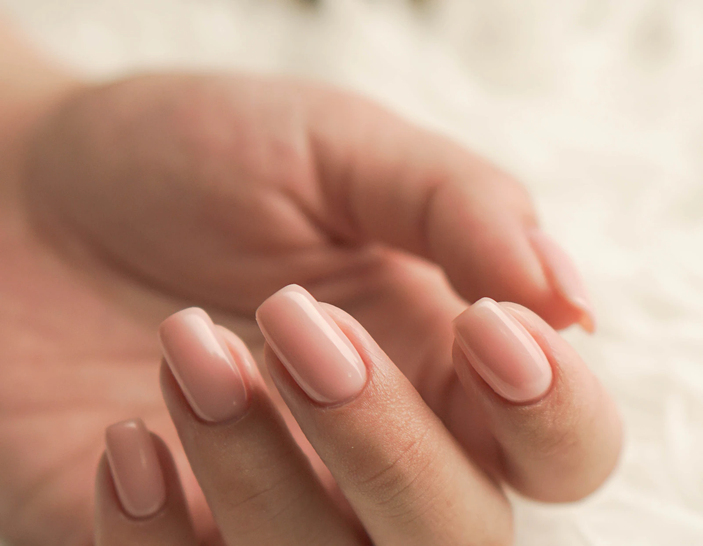
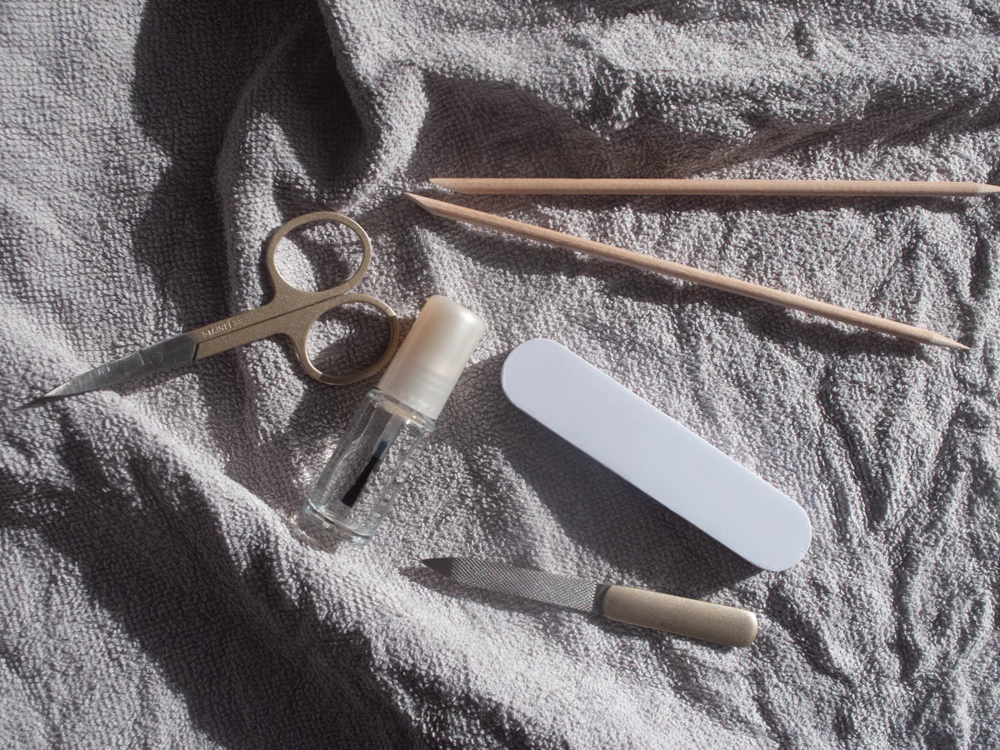
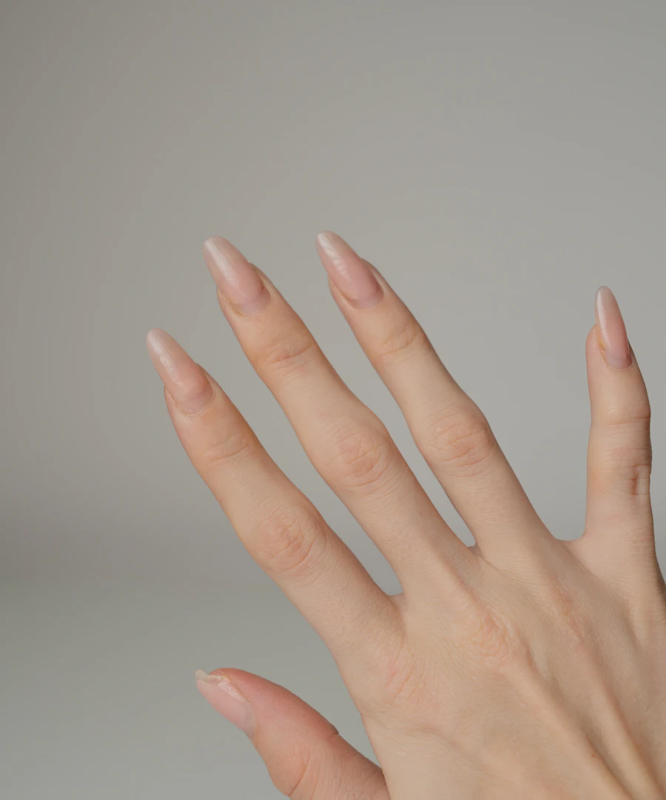
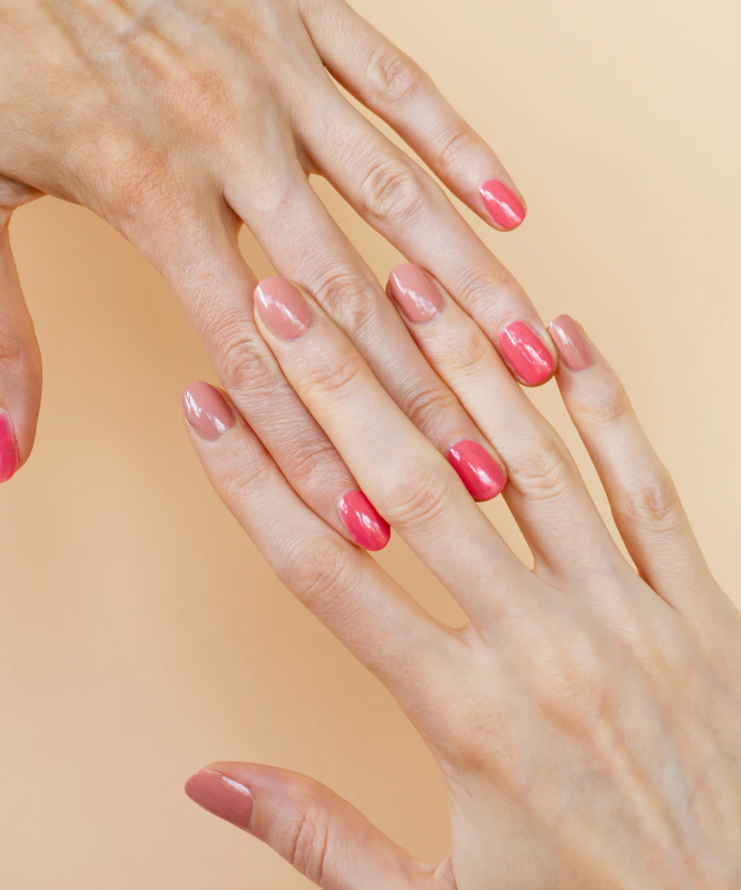
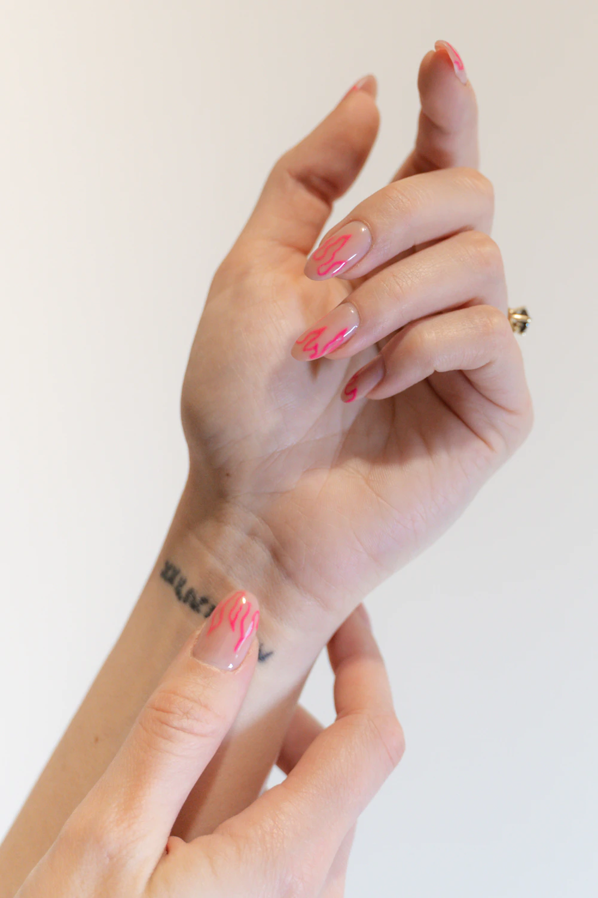
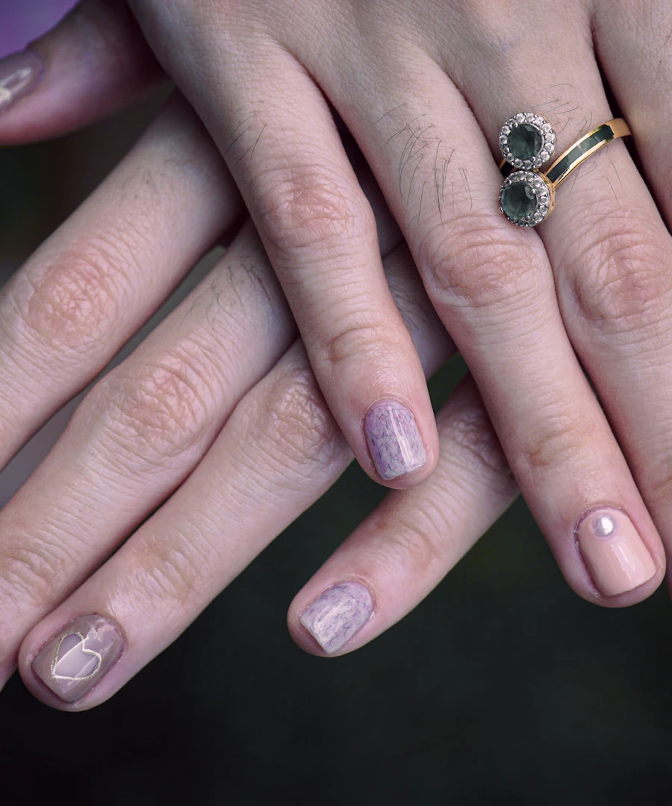
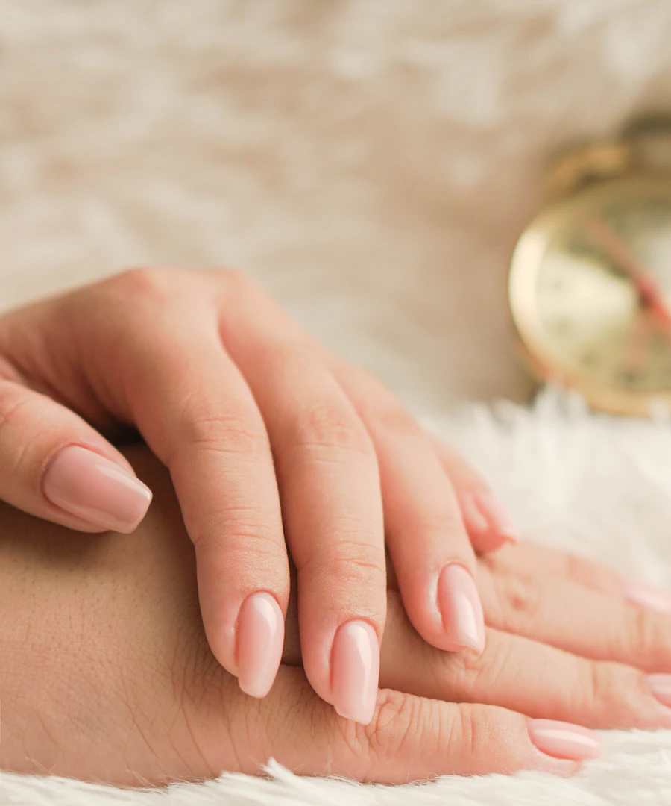
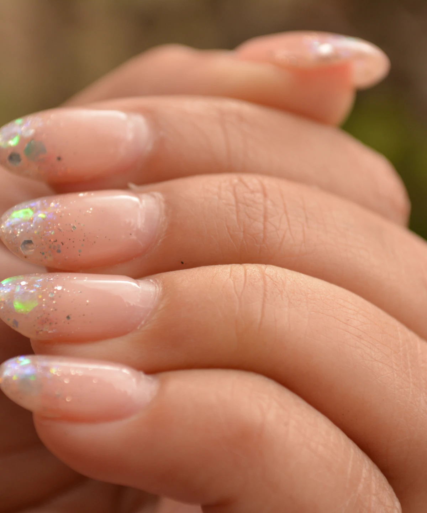

最初から最後まで、ひとりで。
毎回同じネイリストが担当します。好みや過ごし方を少しずつ知り、次のご提案へつなげます。

A quiet moment, just for you.
01 — 06

ABOUT THE ATELIER 01 / 06
忙しい日々のあいだに、ほんの少し呼吸を整える。爪の形や肌の色、その日の気分までお聞きしながら、無理のない美しさを一緒に見つけます。
tuuの過ごし方指先に触れるからこそ、大切にしていること。
毎回同じネイリストが担当します。好みや過ごし方を少しずつ知り、次のご提案へつなげます。
状態を見ながら必要な分だけ整えます。削りすぎないことを大切に、健やかな爪を育てます。
一席だけの個室空間。前後に余白を設け、周りを気にせず過ごせる一日四枠の完全予約制です。
A STUDY IN COLOUR 02 / 06
スクロールしてご覧ください横にスワイプしてご覧ください→

透明感を重ねた、静かなワンカラー。

肌になじむ濃淡で、手元に明るさを。

細いラインをひとさじ。指先に軽やかなアクセント。

光の角度で表情が変わる、小さなアクセント。

いつもの服にすっと溶け込む、やさしい色。

ピンクの濃淡を楽しむ、遊び心のあるワンカラー。
掲載デザインはすべてサンプルです。色や仕上がりは爪の状態・肌色・光の環境により異なります。
YOUR SHAPE 04 / 06
指先の印象をつくる、爪のかたち。お仕事や日々の過ごし方も伺いながらご提案します。
やさしく自然な印象
指をすらりと見せる
ほどよく華やかな印象
すっきり、端正な印象
A VISIT TO TUU 05 / 06
予約ボタンからご希望の日時をお知らせください。LINEでのご相談も承ります。
色や形のお好み、爪のお悩みを伺い、施術内容を一緒に決めます。
爪の状態に合わせてケアし、落ち着いた個室で仕上げていきます。
きれいな状態を長く楽しむための、簡単なケア方法をお伝えします。
手元を見つめるたび、少し気持ちがほどけるように。
see you at tuuA MOMENT FOR YOU
完全予約制・一日四枠。ご希望の日時をお聞かせください。
このページ内リンクはサンプルです。実際の予約・SNSには接続しません。